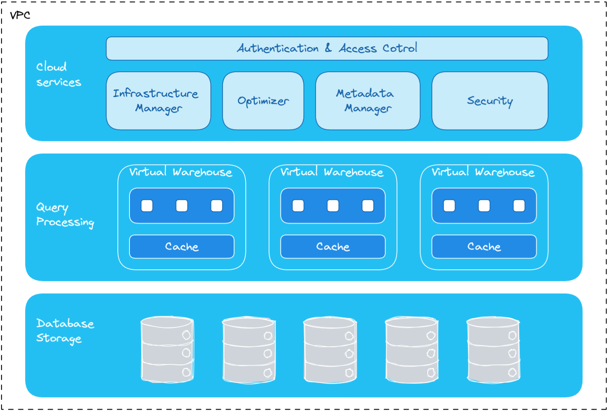
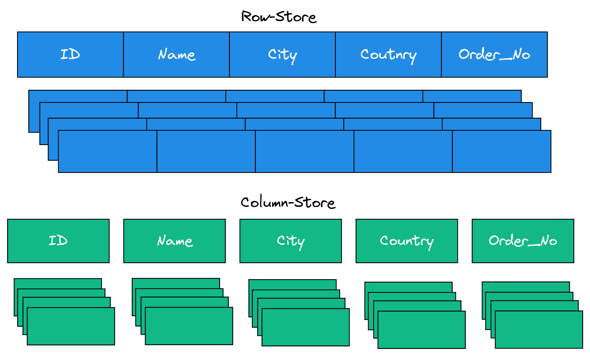
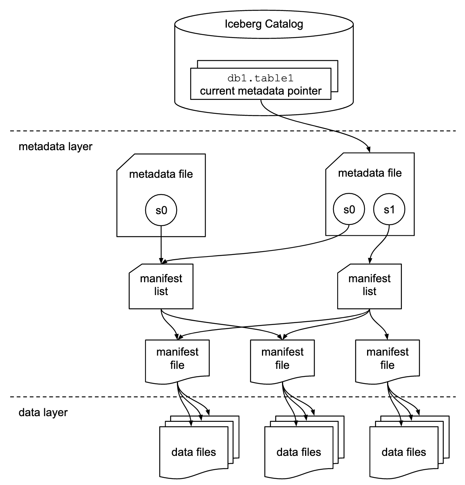
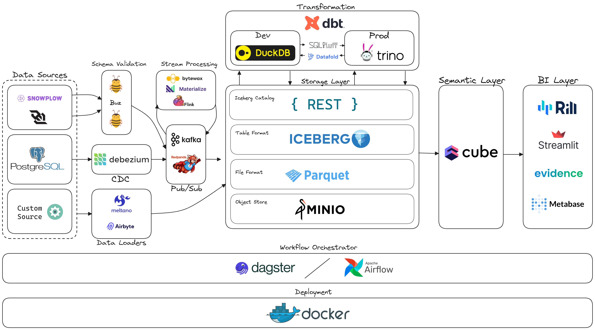
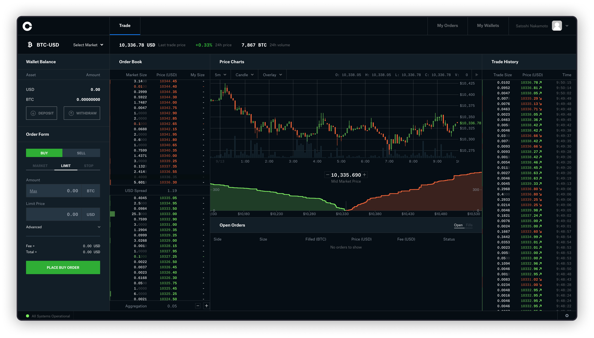

Building a Local (Data) Lakehouse - Part 1: The Blueprint
The Data Lakehouse
The term Data Lakehouse came from combining the words Data Lake and Data Warehouse. Lets first describe how I view these two terms.
Data Lake
The Data Lake is a term used to describe storing all your data into object storage like S3. This can be anything from structured data (parquet, CSVs etc.) to semi-structured data (JSON, XML) to unstructured data (images, audio etc,). To me that is it, that’s a data lake.
Data Warehouse
The Data Warehouse is a database that is suppose to act as the coveted single source of truth of all data within a company. While you can use trusty old Postgres as Craig Kerstiens demonstrates here:
The more common players you are going to see fulfill the data warehouse role is Snowflake, BigQuery & Redshift. That’s because the workloads you run on data warehouses tend to be different in nature than the workloads you run on your application database. The term for this type of workload is commonly referred to as OLAP (Online Analytical Processing) which typically involves running aggregate queries across the entire dataset where as OLTP (Online Transactional Processing) is usually more concerned with single point queries where you are reading or updating one single row. This is a drastic simplification but it gets the point across.
The reason the above mention names tend to be suited for OLAP is largely because they are distributed systems designed so that they can horizontally scale resources. The storage and compute are separated as well so they scale independently of each other so you don’t necessarily need to increase storage if you just want more compute resources. The distributed nature of the compute resources allows for massively parallel processing (MPP) so the database can split the work across several different nodes within the cluster.
Snowflake Architecture

https://docs.snowflake.com/en/user-guide/intro-key-conceptsWith this all being said I should mention a database called DuckDB. DuckDB is an in-process SQL OLAP database management system and it runs completely embedded within the host process without the need of separate server software. Data can be stored in persistent with a single-file database. DuckDB is often referred to as the “SQLite for analytics”.
I wanted to bring up DuckDB because it completely goes against the trend from typically databases warehouses that require a distributing computing architecture. DuckDB works best around data that is less than ~200GB and has some pretty impressive benchmark results that you can look at here and here. If you want to know why it’s so fast I highly recommend checking out this presentation given by Mark Rassveldt CTO of DuckDB Labs.
The other design choice that makes these databases suited for OLAP workloads is the columnar data store. This allows for better compression because typically one column is going to be of the same data type. Another benefit of the columnar data store is usually you can scan less data because when you select a subset of columns from a table so it doesn’t need to read the other columns.

Data Table Format
Now you might be wondering how do we combine a Data Lake and a Data Warehouse? First, lets talk about the downsides of a data lake and data warehouse to see the problem the lakehouse is trying to solve. The main disadvantage you have with a data lake is you don’t have ACID guarantees. ACID stands for atomicity, consistency, isolation, and durability.
- Atomicity - means that all transactions either succeed or fail completely.
- Consistency - guarantees relate to how a given state of the data is observed by simultaneous operations.
- Isolation - refers to how simultaneous operations potentially conflict with one another.
- Durability - means that committed changes are permanent.
ACID guarantees provide data reliability and integrity. Now this is something data warehouses provide. The downside of data warehouses is that your data is stored in a managed proprietary storage format that is only queryable by the engines provided by the data warehouse provider.
So what if we could make it so that your data lake could have ACID guarantees and a common protocol that other data processing engines could implement to interact with these tables? Enter the table format. The most common ones are Apache Iceberg, Delta, Apache Hudi. I am going to focus on Iceberg as I believe that this will be the winner of all the table formats.
One thing I didn’t quite understand at first was what is a table format? How is this different than parquet? How does this help provide ACID guarantees? These are some common questions to have when you first learn about table formats.
I highly recommend reading Apache Iceberg: An Architectural Look Under the Covers to understand what a table format is and the details of Iceberg. A table format is commonly explained as a way to organize a dataset’s files to present them as a single “table”1.
To understand how Iceberg does this we can look at the three components that makeup Iceberg:
- Catalog
- A store that houses the current metadata pointer for Iceberg tables
- Must support atomic operations for updating the current metadata point (e.g. Hadoop File System (HDFS), Hive Meta Store, Nessie, REST)
- Metadata Layer
- Metadata File: Stores metadata about a table which includes information such as table’s schema, partition info, snapshots.
- Manifest List: A list of manifest files. The manifest list has information about each manifest file that makes up that snapshot, such as the location of the manifest file, what snapshot it was added as part of, and information about the partitions it belongs to
- Manifest File: Track data files as well as additional details and statistics about each file. Each manifest file keeps track of a subset of the data files for parallelism and reuse efficiency at scale. They contain a lot of useful information that is used to improve efficiency and performance while reading the data from these data files, such as details about partition membership, record count, and lower and upper bounds of columns. Iceberg is file-format agnostic, so the manifest files also specify the file format of the data file, such as Parquet, ORC, or Avro.
- Data
- The actual data stored in file formats such as Parquet, ORC or Avro. Usually this data is stored in object storage such as S3.
Architectural diagram of the structure of an Iceberg table

https://www.dremio.com/wp-content/uploads/2023/03/iceberg-metadata.png
{kind=link}
The benefits of Iceberg are the following2:
- Transactional consistency between multiple applications where files can be added, removed or modified atomically, with full read isolation and multiple concurrent writes
- Full schema evolution to track changes to a table over time
- Time travel to query historical data and verify changes between updates
- Partition layout and evolution enabling updates to partition schemes as queries and data volumes change without relying on hidden partitions or physical directories
- Rollback to prior versions to quickly correct issues and return tables to a known good state
- Advanced planning and filtering capabilities for high performance on large data volumes
My Local (Data) Lakehouse
Now that we have a better understanding of what a Data Lakehouse is and the benefits it provides, lets get into designing my local lakehouse!

Now I know there is a lot going on with this diagram. That’s simply because there are a lot of technologies and ideas I would like to try out. I also want to compare and contrast tools that are in the same category to see which one I like better. Lets start out with some of my main goals with this project.
The Foundation
The core part of my local lakehouse is going to be two main components:
Data Storage Layer
I plan on using MinIO as an open source, S3 compatible object storage. I will be using the Iceberg Rest Image for the Iceberg catalog implementation. I might write my own implementation in the future.
Orchestrator
The orchestrator to me is the most important component in any data stack. It is one of the only components that spans across the entire stack and helps integrate everything together into one cohesive system. Airflow is by far the most popular orchestrator and I have always wanted to try it. I personally believe Dagster will be the category winner in this space. So my plan is to setup Airflow and then imitate a migration to Dagster using the dagster-airflow package.
Polyglot Engine dbt Project
Implement a dbt project that supports multiple query engines in one project. The goal is to be able to define the target.name and target.profile_name at the model level. This allows the ability to change query engines based on type of environment (the target.profile_name) dev, qc, prod without having to modifying any of the models.
Example use case setup to save on costs is to have DuckDB (single node compute engine) for dev and then in prod using Trino (distributed compute engine). Another potential use case is within one environment like dev, I may want one model to be executed by a certain engine because it has better support for python models (Spark) while the other engine is better for SQL (Trino). At the end of the day what I want to demonstrate is the flexibility of Iceberg.
Custom Open Source Connectors
My goal here is that I want to build two brand new open source connectors. One using Airbyte and another using Meltano. I’d like to then setup two batch pipelines with the new connectors and load it into MinIO in the Iceberg table format. If the connectors don’t support this that is what I will build.
Real Time Data Pipelines
Real Time Data Pipeline #1
I want to build a real time data pipeline that ingests data from the Coinbase websocket, uses Buz to validate the schema of the data from Coinbase before it sends it to Redpanda a streaming data platform. After that I will do some data stream processing with Bytewax reading from one Redpanda topic and writing to another one. Then I will load the data into MinIO. Lastly, I want to try to create a Coinbase Pro clone as shown in the image below. I am undecided how I want to implement the frontend but I am thinking about using a JavaScript framework and data viz library like Charts.js.

Real Time Data Pipeline #2
In the second real time data pipeline I want to set up snowplow to create, track and collect events such as impressions, clicks, video playback (or even something other custom). Snowplow with send the data to Buz to validate the schema of the data before sending it to Kafka. After it lands in a Kafka topic I will use a streaming database called Materialize to do some stream processing before writing it back to another Kafka topic and loading it into MinIO.
Real Time Data Pipeline #3
The last real time data pipeline implement Change Data Capture (CDC) using Debezium to ingest changes that occur to a Postgres database. These events then will get sent to a Kafka topic and then Flink will ingest that topic and write the data into MinIO.
Semantic Layer
I think semantic layers will start to become more popular and I want to try out one of the most popular ones cube.
BI Layer
These are several BI tools that interest me and I would like to build at least one dashboard in each.
Conclusion
This is going to be a great way for me to get hands on experience with some of the tools I don’t get to interact with on my daily job. Now that we have a blueprint created it’s time to start building the local lakehouse! In my next post I will be writing about my experience on setting up MinIO and the Iceberg Rest Catalog with some sample data and running our first queries.